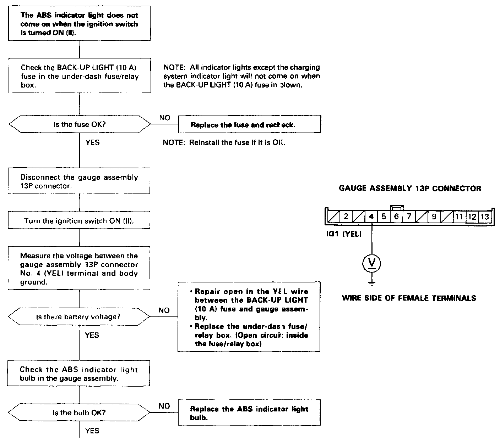
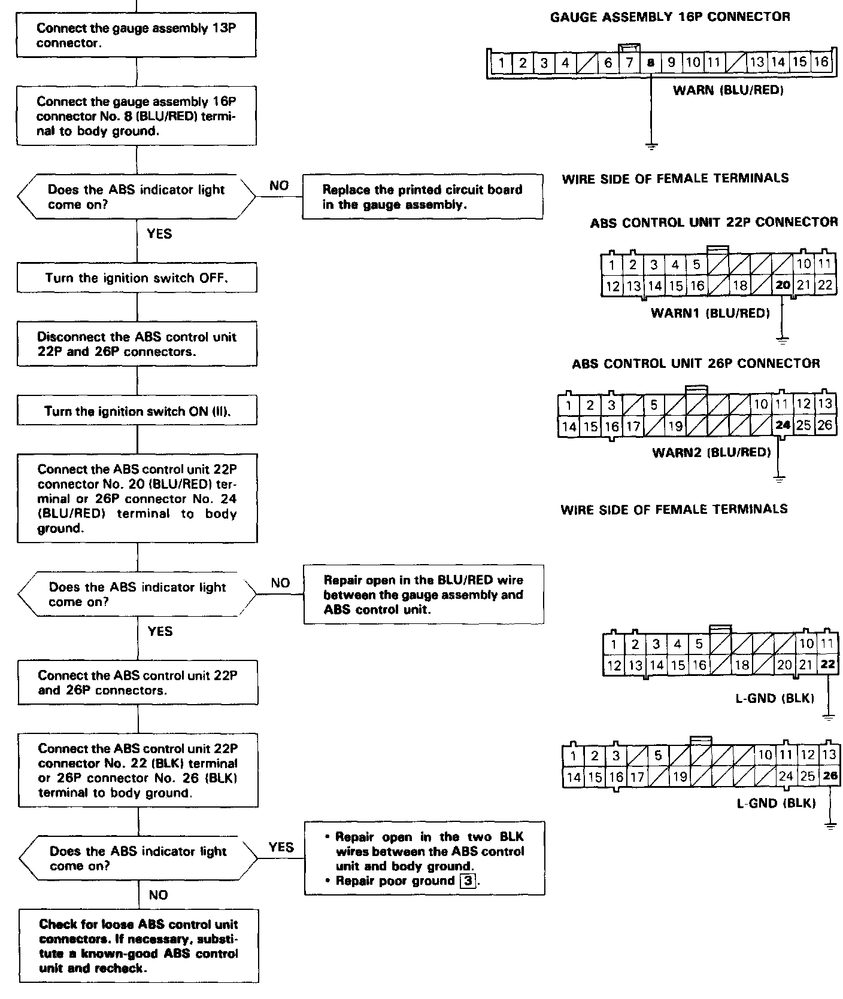

ABS Indicator Does Not Come On
Part (1 Of 2):

Part (2 Of 2):

ABS Indicator Light Does Not Come On
The ABS indicator light does not come on when the ignition switch is turned ON (II).
When the ignition switch is turned ON (II) the ABS indicator light drive transistor in the ABS control unit is activated by self-bias and turns the ABS indicator light on.
Possible causes for an ABS indicator light that does not come on:
- Blown BACK-UP LIGHT (10 A) fuse
- Open circuit between the BACK-UP LIGHT (10 A) fuse and ABS indicator light.
- Blown ABS indicator light bulb
- Open circuit between the ABS indicator light and ABS control unit
- Open circuit between the ABS control unit and body ground
- Poor body ground
- Faulty ABS control unit